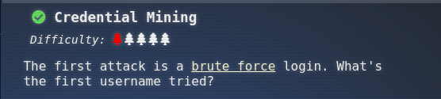
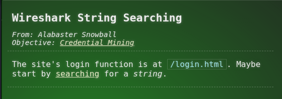
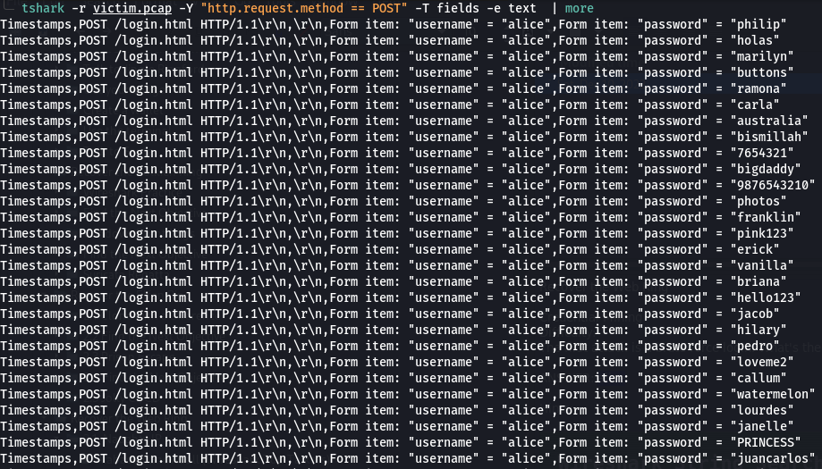
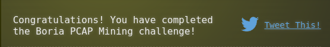

Recover the Web Ring
3.2 Credential Mining

The first attack is a brute force https://owasp.org/www-community/attacks/Brute_force_attack login. What's the first username tried?
Hint(s)

Solve
ANSWER: alice
Terminal answers
$ tshark -r victim.pcap -Y "http.request.method == POST" -T fields -e text | more

